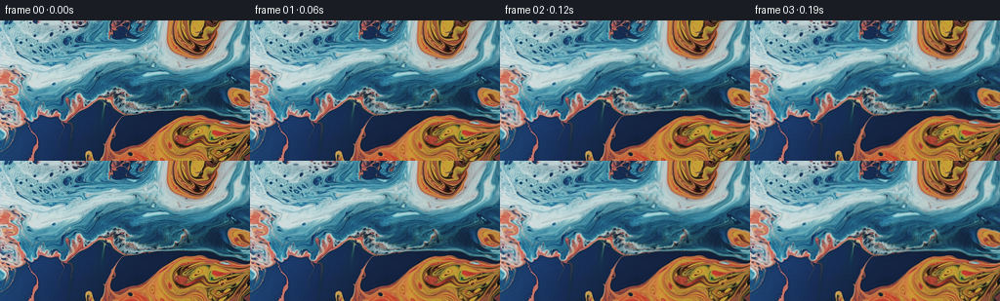

候选 01 · 2026-11-09T00:00:50.585032+00:00 · 点开播放与检查图
inspection.png

transition_check.png

代码变化
--- 上一保存版本
+++ 本次保存版本
@@ -0,0 +1,119 @@
+"""Animate the supplied liquid photograph with smooth dye advection.
+No external images, models, or simulators are used. A prescribed, smooth
+streamfunction drives backward characteristics; the original RGB image is
+sampled only once per frame, keeping the fine marbling intact.
+"""
+from pathlib import Path
+import json
+import numpy as np
+from PIL import Image
+from artifact_io import save
+
+ROOT = Path(__file__).resolve().parent
+
+
+def bilinear(a, x, y):
+ h, w = a.shape[:2]
+ x = np.clip(x, 0, w - 1.00001)
+ y = np.clip(y, 0, h - 1.00001)
+ ix, iy = x.astype(np.int32), y.astype(np.int32)
+ fx, fy = x - ix, y - iy
+ if a.ndim == 3:
+ fx, fy = fx[..., None], fy[..., None]
+ return ((a[iy, ix] * (1-fx) + a[iy, ix+1] * fx) * (1-fy)
+ + (a[iy+1, ix] * (1-fx) + a[iy+1, ix+1] * fx) * fy)
+
+
+def cubic_kernel(x):
+ x = np.abs(x)
+ return np.where(x <= 1, 1.5*x**3 - 2.5*x**2 + 1,
+ np.where(x < 2, -.5*x**3 + 2.5*x**2 - 4*x + 2, 0))
+
+
+def sample_rgb(im, x, y):
+ h, w = im.shape[:2]
+ ix, iy = np.floor(x).astype(np.int32), np.floor(y).astype(np.int32)
+ out = np.zeros((*x.shape, 3), dtype=np.float32)
+ for j in (-1, 0, 1, 2):
+ wy = cubic_kernel(y - (iy+j))
+ yy = np.clip(iy+j, 0, h-1)
+ for i in (-1, 0, 1, 2):
+ ww = wy * cubic_kernel(x - (ix+i))
+ out += im[yy, np.clip(ix+i, 0, w-1)] * ww[..., None]
+ return np.clip(np.rint(out), 0, 255).astype(np.uint8)
+
+
+def velocity(x, y, t, w, h):
+ # The broad eddies follow the lobes of pigment visible in the photograph.
+ # psi is a streamfunction, so its curl is divergence-free: this is an
+ # incompressible flow, not a pulsating scale/elastic displacement effect.
+ psi = np.zeros_like(x)
+ px = np.zeros_like(x)
+ py = np.zeros_like(x)
+ eddies = [
+ (140, 57, 61, 29, 225, .1),
+ (201, 8, 30, 35, -147, 1.5),
+ (204, 124, 46, 26, -205, 2.4),
+ (49, 16, 47, 32, -104, .8),
+ (13, 83, 25, 36, 78, 2.9),
+ (91, 100, 26, 24, 46, 1.3),
+ (242, 77, 18, 18, 39, 3.5),
+ ]
+ for cx, cy, rx, ry, strength, phase in eddies:
+ # Slow small shifts keep individual swirls from looking like rigid discs.
+ cx += 1.6*(np.sin(.32*t+phase)-np.sin(phase))
+ cy += 1.0*(np.cos(.38*t+phase)-np.cos(phase))
+ amp = strength*(1 + .10*np.sin(.48*t+phase))
+ dx, dy = x-cx, y-cy
+ g = amp*np.exp(-.5*((dx/rx)**2+(dy/ry)**2))
+ psi += g
+ px -= dx/(rx*rx)*g
+ py -= dy/(ry*ry)*g
+ # Fine, low-amplitude curl modes flex the long paint filaments gently.
+ for amp, kx, ky, phase, speed in [
+ (8.0, .041, .066, .2, .24),
+ (3.1, .086, -.107, 1.1, -.31),
+ (1.0, .157, .174, 2.3, .43),
+ ]:
+ p = kx*x+ky*y+phase+speed*t
+ psi += amp*np.sin(p)
+ px += amp*kx*np.cos(p)
+ py += amp*ky*np.cos(p)
+ # A free-slipping edge prevents invented pixels or reflected seams from
+ # entering the shot; dye can still slide along the frame's boundaries.
+ s = 13.0
+ ex0, ex1 = np.exp(-x/s), np.exp(-(w-1-x)/s)
+ ey0, ey1 = np.exp(-y/s), np.exp(-(h-1-y)/s)
+ wx, wy = (1-ex0)*(1-ex1), (1-ey0)*(1-ey1)
+ dxw, dyw = (ex0-ex1)/s, (ey0-ey1)/s
+ u = wx*(wy*py + dyw*psi)
+ v = -wy*(wx*px + dxw*psi)
+ return np.stack((u, v), axis=-1).astype(np.float32)
+
+
+def main():
+ spec = json.loads((ROOT/'task_spec.json').read_text())
+ im = np.asarray(Image.open(ROOT/'first_frame.png').convert('RGB'))
+ h, w = im.shape[:2]
+ n, fps = spec['frames'], spec['fps']
+ yy, xx = np.mgrid[:h, :w].astype(np.float32)
+ mapping = np.stack((xx, yy), axis=-1)
+ frames = np.empty((n, h, w, 3), dtype=np.uint8)
+ frames[0] = im
+ substeps = 4
+ dt = 1/(fps*substeps)
+ for frame in range(1, n):
+ for sub in range(substeps):
+ t = (frame-1)/fps + (sub+.5)*dt
+ vel = velocity(xx, yy, t, w, h)
+ midx = xx - .5*dt*vel[..., 0]
+ midy = yy - .5*dt*vel[..., 1]
+ vhalf = velocity(midx, midy, t, w, h)
+ mapping = bilinear(mapping, xx-dt*vhalf[..., 0], yy-dt*vhalf[..., 1]).astype(np.float32)
+ frames[frame] = sample_rgb(im, mapping[..., 0], mapping[..., 1])
+ assert np.array_equal(frames[0], im)
+ save(frames, ROOT)
+ print('Saved', frames.shape, frames.dtype)
+
+if __name__ == '__main__':
+ main()
命令 3 · 2026-11-09T00:00:47.438467+00:00/bin/bash -lc "cat > generate.py <<'PY'
\"\"\"Animate the supplied liquid photograph with smooth dye advection.
No external images, models, or simulators are used. A prescribed, smooth
streamfunction drives backward characteristics; the original RGB image is
sampled only once per frame, keeping the fine marbling intact.
\"\"\"
from pathlib import Path
import json
import numpy as np
from PIL import Image
from artifact_io import save
ROOT = Path(__file__).resolve().parent
def bilinear(a, x, y):
h, w = a.shape[:2]
x = np.clip(x, 0, w - 1.00001)
y = np.clip(y, 0, h - 1.00001)
ix, iy = x.astype(np.int32), y.astype(np.int32)
fx, fy = x - ix, y - iy
if a.ndim == 3:
fx, fy = fx[..., None], fy[..., None]
return ((a[iy, ix] * (1-fx) + a[iy, ix+1] * fx) * (1-fy)
+ (a[iy+1, ix] * (1-fx) + a[iy+1, ix+1] * fx) * fy)
def cubic_kernel(x):
x = np.abs(x)
return np.where(x <= 1, 1.5*x**3 - 2.5*x**2 + 1,
np.where(x < 2, -.5*x**3 + 2.5*x**2 - 4*x + 2, 0))
def sample_rgb(im, x, y):
h, w = im.shape[:2]
ix, iy = np.floor(x).astype(np.int32), np.floor(y).astype(np.int32)
out = np.zeros((*x.shape, 3), dtype=np.float32)
for j in (-1, 0, 1, 2):
wy = cubic_kernel(y - (iy+j))
yy = np.clip(iy+j, 0, h-1)
for i in (-1, 0, 1, 2):
ww = wy * cubic_kernel(x - (ix+i))
out += im[yy, np.clip(ix+i, 0, w-1)] * ww[..., None]
return np.clip(np.rint(out), 0, 255).astype(np.uint8)
def velocity(x, y, t, w, h):
# The broad eddies follow the lobes of pigment visible in the photograph.
# psi is a streamfunction, so its curl is divergence-free: this is an
# incompressible flow, not a pulsating scale/elastic displacement effect.
psi = np.zeros_like(x)
px = np.zeros_like(x)
py = np.zeros_like(x)
eddies = [
(140, 57, 61, 29, 225, .1),
(201, 8, 30, 35, -147, 1.5),
(204, 124, 46, 26, -205, 2.4),
(49, 16, 47, 32, -104, .8),
(13, 83, 25, 36, 78, 2.9),
(91, 100, 26, 24, 46, 1.3),
(242, 77, 18, 18, 39, 3.5),
]
for cx, cy, rx, ry, strength, phase in eddies:
# Slow small shifts keep individual swirls from looking like rigid discs.
cx += 1.6*(np.sin(.32*t+phase)-np.sin(phase))
cy += 1.0*(np.cos(.38*t+phase)-np.cos(phase))
amp = strength*(1 + .10*np.sin(.48*t+phase))
dx, dy = x-cx, y-cy
g = amp*np.exp(-.5*((dx/rx)**2+(dy/ry)**2))
psi += g
px -= dx/(rx*rx)*g
py -= dy/(ry*ry)*g
# Fine, low-amplitude curl modes flex the long paint filaments gently.
for amp, kx, ky, phase, speed in [
(8.0, .041, .066, .2, .24),
(3.1, .086, -.107, 1.1, -.31),
(1.0, .157, .174, 2.3, .43),
]:
p = kx*x+ky*y+phase+speed*t
psi += amp*np.sin(p)
px += amp*kx*np.cos(p)
py += amp*ky*np.cos(p)
# A free-slipping edge prevents invented pixels or reflected seams from
# entering the shot; dye can still slide along the frame's boundaries.
s = 13.0
ex0, ex1 = np.exp(-x/s), np.exp(-(w-1-x)/s)
ey0, ey1 = np.exp(-y/s), np.exp(-(h-1-y)/s)
wx, wy = (1-ex0)*(1-ex1), (1-ey0)*(1-ey1)
dxw, dyw = (ex0-ex1)/s, (ey0-ey1)/s
u = wx*(wy*py + dyw*psi)
v = -wy*(wx*px + dxw*psi)
return np.stack((u, v), axis=-1).astype(np.float32)
def main():
spec = json.loads((ROOT/'task_spec.json').read_text())
im = np.asarray(Image.open(ROOT/'first_frame.png').convert('RGB'))
h, w = im.shape[:2]
n, fps = spec['frames'], spec['fps']
yy, xx = np.mgrid[:h, :w].astype(np.float32)
mapping = np.stack((xx, yy), axis=-1)
frames = np.empty((n, h, w, 3), dtype=np.uint8)
frames[0] = im
substeps = 4
dt = 1/(fps*substeps)
for frame in range(1, n):
for sub in range(substeps):
t = (frame-1)/fps + (sub+.5)*dt
vel = velocity(xx, yy, t, w, h)
midx = xx - .5*dt*vel[..., 0]
midy = yy - .5*dt*vel[..., 1]
vhalf = velocity(midx, midy, t, w, h)
mapping = bilinear(mapping, xx-dt*vhalf[..., 0], yy-dt*vhalf[..., 1]).astype(np.float32)
frames[frame] = sample_rgb(im, mapping[..., 0], mapping[..., 1])
assert np.array_equal(frames[0], im)
save(frames, ROOT)
print('Saved', frames.shape, frames.dtype)
if __name__ == '__main__':
main()
PY
OPENBLAS_NUM_THREADS=1 python generate.py"exit 0